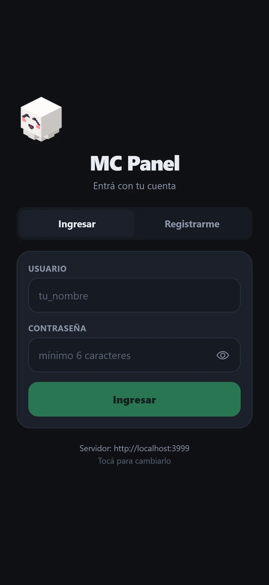
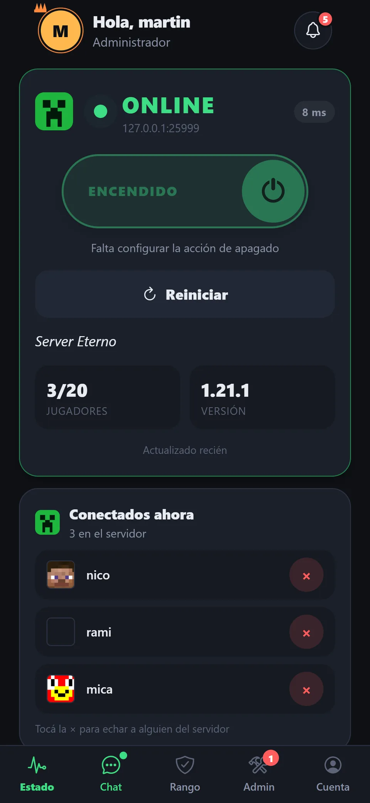
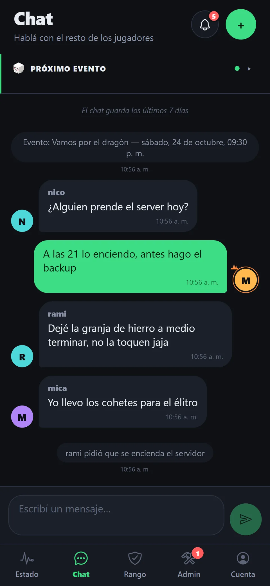
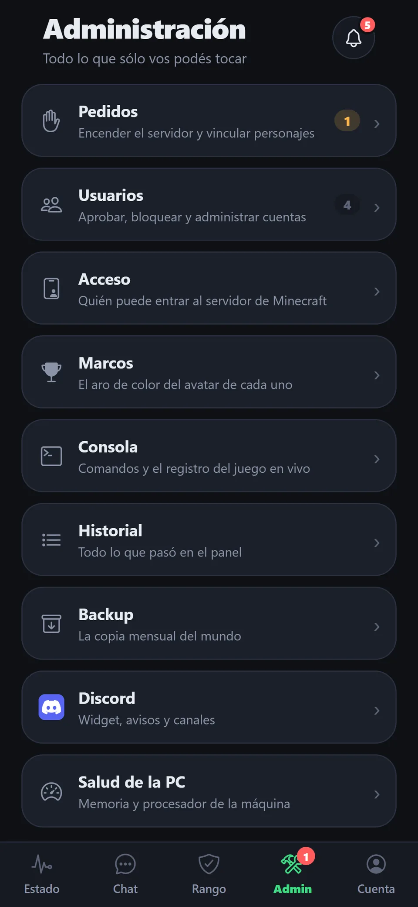

07 / 07
MC Panel
Una app para manejar desde el celular el servidor de Minecraft de un grupo de amigos.
- Año
- 2026
- Contexto
- Proyecto personal
- Rol
- Diseño de producto y desarrollo

El servidor de Minecraft del grupo corre en mi PC, y para jugar había que escribirme para que lo prendiera. MC Panel resuelve eso: muestra si el servidor está online y quién está conectado, deja pedir el encendido con un botón, me avisa al celular para aprobarlo y suma chat, eventos y una consola remota.




El diseño
Una sola acción principal por pantalla: el interruptor al centro. Los estados intermedios (encendiendo, apagando) los lleva el servidor, así todos los dispositivos ven lo mismo, sin importar desde dónde se dio la orden. El panel de administración es un índice de nueve secciones con su descripción, en vez de una fila de pestañas que había que arrastrar de costado.
Cómo está hecho
React Native con Expo, una sola base para iOS, Android y web, y una API en Node.js que corre en la PC. El estado sale del mismo protocolo que usa la lista de servidores del juego, sin plugins ni mods. El apagado va por RCON para que el mundo se guarde en orden, y los scripts que se pueden ejecutar están en una lista blanca.